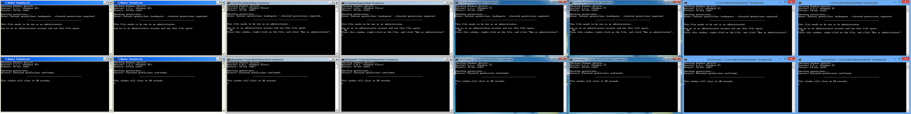

Batch script: how to check for admin rights
How do I check if the current batch script has admin rights?
I know how to make it call itself with runas but not how to check for admin rights. The only solutions I've seen are crude hack jobs or use external programs. Well, actually I don't care if it is a hack job as long as it works on Windows XP and newer.
Answer
Issues
blak3r / Rushyo's solution works fine for everything except Windows 8. Running
AT on Windows 8 results in:
The AT command has been deprecated. Please use schtasks.exe instead. The request is not supported.
(see screenshot #1) and will return %errorLevel% 1.
Research
So, I went searching for other commands that require elevated permissions. rationallyparanoid.com had a list of a few, so I ran each command on the two opposite extremes of current Windows OSs (XP and 8) in the hopes of finding a command that would be denied access on both OSs when run with standard permissions.
Eventually, I did find one - NET SESSION. A true , clean, universal
solution that doesn't involve:
- the creation of or interaction with data in secure locations
- analyzing data returned from
FORloops - searching strings for "Administrator"
- using
AT(Windows 8 incompatible) orWHOAMI(Windows XP incompatible).
Each of which have their own security, usability, and portability issues.
Testing
I've independently confirmed that this works on:
- Windows XP, x86
- Windows XP, x64
- Windows Vista, x86
- Windows Vista, x64
- Windows 7, x86
- Windows 7, x64
- Windows 8, x86
- Windows 8, x64
- Windows 10 v1909, x64
(see screenshot #2)
Implementation / Usage
So, to use this solution, simply do something like this:
@echo off goto check_Permissions :check_Permissions echo Administrative permissions required. Detecting permissions... net session >nul 2>&1 if %errorLevel% == 0 ( echo Success: Administrative permissions confirmed. ) else ( echo Failure: Current permissions inadequate. ) pause >nul
Explanation
NET SESSION is a standard command used to "manage server computer
connections. Used without parameters, [it] displays information about all
sessions with the local computer."
So, here's the basic process of my given implementation:
-
@echo off- Disable displaying of commands
-
goto check_Permissions- Jump to the
:check_Permissionscode block
- Jump to the
-
net session >nul 2>&1- Run command
- Hide visual output of command by
- Redirecting the standard output (numeric handle 1 /
STDOUT) stream tonul - Redirecting the standard error output stream (numeric handle 2 /
STDERR) to the same destination as numeric handle 1
-
if %errorLevel% == 0- If the value of the exit code (
%errorLevel%) is0then this means that no errors have occurred and, therefore, the immediate previous command ran successfully
- If the value of the exit code (
-
else- If the value of the exit code (
%errorLevel%) is not0then this means that errors have occurred and, therefore, the immediate previous command ran unsuccessfully
- If the value of the exit code (
- The code between the respective parenthesis will be executed depending on which criteria is met
Screenshots
Windows 8 AT %errorLevel%:
![[imgur]](https://i.imgur.com/01irE.png)
NET SESSION on Windows XP x86 - Windows 8 x64:

Thank you, @Tilka, for changing your accepted answer to mine. :)
Suggest
Anders solution worked for me but I wasn't sure how to invert it to get the opposite (when you weren't an admin).
Here's my solution. It has two cases an IF and ELSE case, and some ascii art to ensure people actually read it. :)
Minimal Version
Rushyo posted this solution here: How to detect if CMD is running as Administrator/has elevated privileges?
NET SESSION >nul 2>&1 IF %ERRORLEVEL% EQU 0 ( ECHO Administrator PRIVILEGES Detected! ) ELSE ( ECHO NOT AN ADMIN! )
Version which adds an Error Messages, Pauses, and Exits
@rem ----[ This code block detects if the script is being running with admin PRIVILEGES If it isn't it pauses and then quits]------- echo OFF NET SESSION >nul 2>&1 IF %ERRORLEVEL% EQU 0 ( ECHO Administrator PRIVILEGES Detected! ) ELSE ( echo ######## ######## ######## ####### ######## echo ## ## ## ## ## ## ## ## ## echo ## ## ## ## ## ## ## ## ## echo ###### ######## ######## ## ## ######## echo ## ## ## ## ## ## ## ## ## echo ## ## ## ## ## ## ## ## ## echo ######## ## ## ## ## ####### ## ## echo. echo. echo ####### ERROR: ADMINISTRATOR PRIVILEGES REQUIRED ######### echo This script must be run as administrator to work properly! echo If you're seeing this after clicking on a start menu icon, then right click on the shortcut and select "Run As Administrator". echo ########################################################## echo. PAUSE EXIT /B 1 ) @echo ON
Works on WinXP --> Win8 (including 32/64 bit versions).
EDIT: 8/28/2012 Updated to support Windows 8. @BenHooper pointed this out in his answer below. Please upvote his answer.